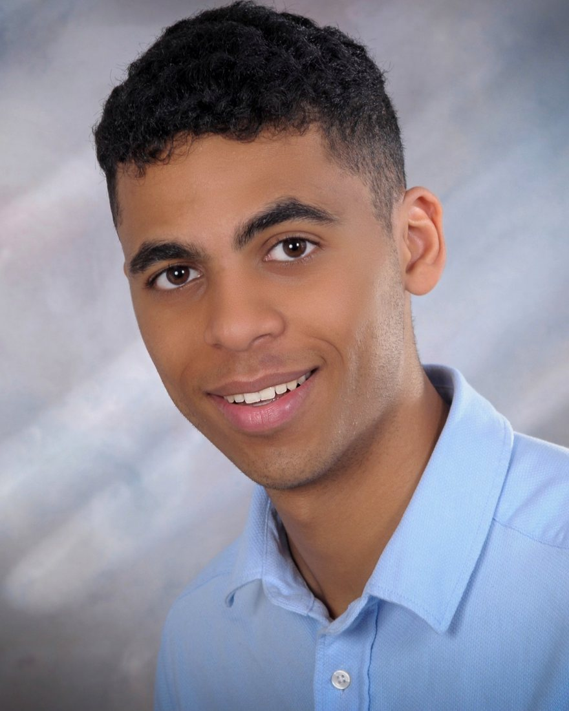

Gesetze und Finanzen sauber umgesetzt
E-Rechnungen, fertige Daten für den Steuerberater, Regeln aus dem Arbeitszeitgesetz und die direkte Anbindung ans Firmenkonto. Das, wovor viele zurückschrecken, baue ich fest in die Software ein.
Ich finde heraus, wo Unternehmen Zeit und Geld mit Papier, Excel und Handarbeit verlieren, und baue ihnen dafür eigene Software, die im Alltag wirklich genutzt wird. Von der ersten Idee bis zum Live-Betrieb, oft in wenigen Wochen, und so, dass Buchhaltung, Datenschutz und Gesetz passen.

Trading begleitet mich seit Jahren, Software war schon als Kind mein Traum. Heute verbinde ich beides und baue Werkzeuge für Trader, die ich selbst nutzen würde.
Schon als kleines Kind war für mich klar: Ich will Informatiker werden.
Das Leben ist dann erst einmal anders verlaufen. Ich habe mich fürs Trading entschieden und bin arbeiten gegangen. Für das Lernen, das dieser Traum gebraucht hätte, blieb neben allem anderen einfach keine Zeit mehr.
Mit KI habe ich einen Weg gefunden, wieder Anschluss zu bekommen. Nicht als Abkürzung, sondern als Werkzeug: Ich nutze sie, um schneller zu lernen und effizient und sauber zu entwickeln. So habe ich meinen alten Traum wieder aufleben lassen. Daraus sind Plattformen entstanden, die heute in echten Betrieben laufen und jeden Tag benutzt werden. Und das Trading ist dabei nicht verloren gegangen: Es steckt heute in meiner eigenen Trading-Plattform.
Vor zweieinhalb Jahren bin ich außerdem zum 1:1-Coaching gekommen und habe dafür eine echte Leidenschaft entwickelt. Mein Ziel ist es jetzt, Trading, Coaching und Entwicklung miteinander zu verbinden. Genau das macht mir am meisten Freude.
Ich stelle mich nicht als den perfekten Profi hin, der auf jede Frage sofort die Antwort hat. Wenn ich etwas nicht weiß, setze ich mich dran, bis ich es verstanden habe. Ich gehe gern einen Schritt weiter als nötig und bleibe auch dann, wenn es mal länger dauert.
Was ich mitbringe, ist kein Stapel Zertifikate, sondern Einsatz, Neugier und den Anspruch, am Ende etwas abzuliefern, das wirklich funktioniert.
Keine Demo-Apps. Jedes Projekt ersetzt Papier, Excel oder Handarbeit in einem echten Unternehmen und läuft dort im Alltag.
Eine schöne Oberfläche ist der leichte Teil. Die eigentliche Arbeit steckt in Gesetzen, Banken, alten Programmen und Datenschutz. Genau da bin ich zuhause.
E-Rechnungen, fertige Daten für den Steuerberater, Regeln aus dem Arbeitszeitgesetz und die direkte Anbindung ans Firmenkonto. Das, wovor viele zurückschrecken, baue ich fest in die Software ein.
Kein Chatbot zum Vorzeigen, sondern KI, die im Alltag Zeit spart: zum Beispiel handschriftliche Stundenzettel einfach per Handyfoto auslesen, auf Deutsch und Polnisch.
Ich ziehe laufende Systeme auf eigene Server bei einem deutschen Anbieter um, abgestimmt mit den Datenschutzbeauftragten. So bleiben die Daten unter Kontrolle des Kunden.
Bestehende Daten aus alten Programmen übernehme ich sauber in die neue Software, ohne dass der laufende Betrieb stillsteht.
Für alle, die es genauer wissen wollen. Auf das Wesentliche reduziert.
Damit baue ich jedes Projekt
Damit es zuverlässig läuft
Wenn alte Software mitspielen muss
Ob Senior-Rolle im Team oder ein Prozess, der endlich digital werden muss: Ich antworte schnell.
Jakob@abou-zaher.de